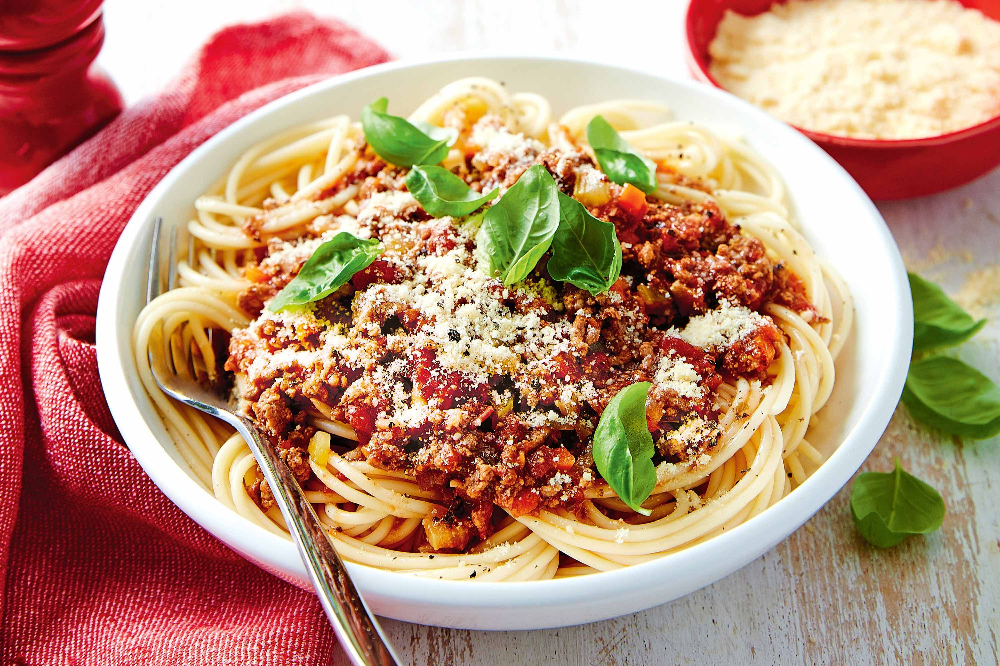

Spaghetti Bolognese
Home

Ingredients
- 1kg Spaghetti (or pasta of choice)
- 500g minced beef
- 500g minced pork
- 4x 400g cans of tomatoes
- 4 cloves of garlic
- 3 carrots
- 4 celery sticks
- 1 large onion
- 1/3 bottle of red wine
- 1/2 cup of beef stock
- bay leaf
- basil
- splash of olive oil
- pinch of salt
- parmesan cheese (optional)
Instructions
- Finely dice the carrots, celery and onions
- heat pan on medium
- add a splash of olive oil to the pan
- add the diced vegetables and saute till the onions are translucent (approx. 5 mins)
- press the garlic into the pan and mix, cook till fragrant (approx. 2 mins)
- add minced pork and beef to pan and cook till browned
- add wine and simmer till alcohol has burned off then add the beef stock and allow pan to reach simmer again before adding the tomatoes and allow pan to reach simmer once again
- add bay leaf, and basil and leave to simmer for 90 minutes
- boil water in a new pan with a pinch of salt and add the spaghetti to the pan and boil for 10 minutes before straining
- enjoy!